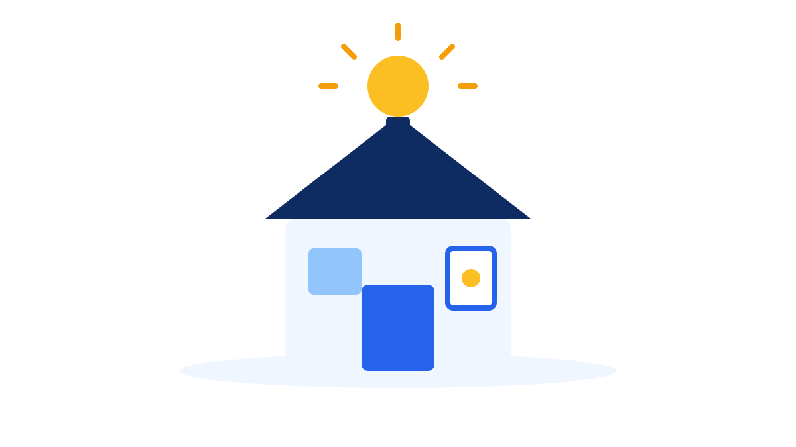

Como religar a energia depois do corte por falta de pagamento
Página atualizada em 26/11/2026 · Revisão editorial LinkContasA energia foi cortada por falta de pagamento? A boa notícia é que religar é possível — e, na maioria das empresas, o próprio pagamento pelo site já aciona a religação. O processo é simples: quitar a dívida, pagar a taxa (se houver) e esperar o prazo oficial.
Neste artigo você vê o passo a passo para religar pela internet, quanto costuma custar, prazos e o que fazer se a luz não voltar. Também deixamos dicas para não cair em golpe — há quem cobre "taxa de religação" por fora, e isso é fraude.

Escolha a sua empresa e vá direto ao site oficial dela.
Por que a energia foi cortada
O corte costuma acontecer depois de uma dívida acumulada, avisos (mensagem, e-mail ou aviso na porta) e um prazo para regularizar. Cada empresa e cada estado têm regras próprias, mas o roteiro é sempre parecido: aviso → multa e juros → corte.
Depois do corte, para religar é preciso regularizar a dívida e, em muitos casos, pagar uma taxa de religação. Quanto antes você resolver, menos juros você acumula e mais rápido a luz volta.
Passo a passo para religar pela internet
- Entre no site oficial da sua empresa pelos botões da lista do LinkContas — assim você garante que é o site certo.
- Faça seu acesso com CPF e senha.
- Abra a área do cliente e procure por Religação, Regularização de débitos ou Pedido de religação.
- O site mostra o valor total: dívida + multa + juros + taxa de religação (quando aplicável).
- Pague por Pix — é a forma mais rápida e costuma acionar a religação na hora.
- Guarde o comprovante e anote o prazo de religação informado na tela.
Quanto custa e quanto tempo leva?
O custo é o valor da dívida regularizada mais a taxa de religação, quando a empresa cobra. O valor é regulado e muda de empresa para empresa e de estado para estado — o site sempre mostra o total antes de você pagar.
O prazo também varia: muitas empresas religam em poucas horas ou no dia útil seguinte após o pagamento confirmado; outras informam prazo maior. O prazo exato aparece na tela depois do pagamento ou pelo atendimento oficial.
Se alguém pedir um valor extra "por fora" para religar mais rápido, é golpe: a religação só é pedida e paga nos canais oficiais.
Já paguei e a luz não voltou. E agora?
- Confira o comprovante e o prazo informado no site.
- Se o prazo já passou, fale com o atendimento oficial (número do rodapé da fatura ou site) e informe o comprovante e o protocolo.
- Peça um novo protocolo da sua ligação e anote o nome de quem atendeu.
- Se a empresa não resolver, registre reclamação no SAC do estado e no consumidor.gov.br.
Em casos raros, a religação exige vistoria — por exemplo, se o medidor foi lacrado ou danificado. O atendimento oficial informa quando é o caso.
Atenção: 3 dicas para não cair em golpe
1. Ninguém liga ou manda mensagem pedindo Pix para religar. O pagamento é sempre feito por você, no site oficial da empresa.
2. Confira o nome do recebedor no Pix. Deve ser o nome oficial da empresa — nunca o nome de uma pessoa.
3. Não clique em link de SMS ou WhatsApp. Digite o endereço do site você mesmo ou use os botões da nossa lista.
Veja também
- Conta de luz atrasada? Como pagar sem cortar
- Conta negativada no Serasa? Como resolver
- Enel SP: pagamento e religação
- CEMIG: religação (MG)
- Light: conta de luz (Rio de Janeiro)
- Fale conosco
- Água cortada? Como religar
Perguntas frequentes
Quanto tempo demora para religar a energia?
Depende da empresa e do estado, mas muitas religam em poucas horas ou no dia útil seguinte após o pagamento. O prazo exato é informado na tela depois do pagamento ou pelo atendimento.
Quanto custa a religação da luz?
É o valor da dívida regularizada mais a taxa de religação, quando a empresa cobra. O valor é regulado e aparece no site antes de você pagar — desconfie de cobranças "por fora".
Posso religar mesmo com a dívida muito antiga?
Sim. Na maioria dos casos basta regularizar o valor total. Se o valor está difícil, negocie o parcelamento antes de pagar — muitas empresas fazem isso pelo próprio site.
A religação é automática?
No pagamento por Pix ou cartão no site, costuma ser automática. Em outras situações, o pedido é registrado e o atendimento aciona a religação. Confirme o prazo depois de pagar.
Não tenho dinheiro para pagar tudo agora. E agora?
Fale com a empresa antes: dá para negociar e parcelar em muitos casos. Também existem programas sociais com desconto para famílias de baixa renda — pergunte no canal oficial.
Fontes oficiais
Este guia foi conferido com base nas regras e canais oficiais do setor:
- ANEEL — agência reguladora de energia
- Ministério de Minas e Energia
- Consumidor.gov.br — canal oficial de reclamações
As regras do setor mudam com o tempo: confira sempre a data de verificação no topo desta página e, em caso de dúvida, use os canais oficiais acima.